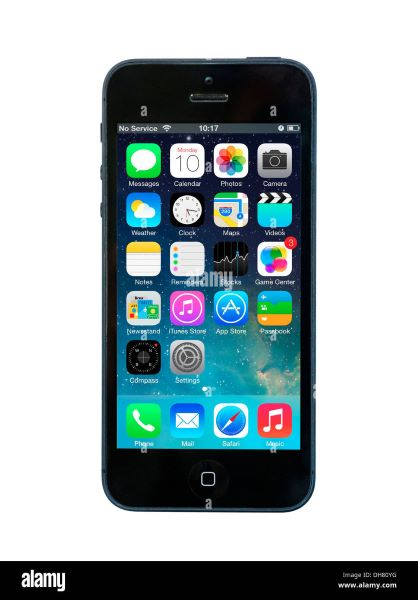

IPhone5
The iPhone 5, released by Apple in September 2012, marked a significant upgrade from its predecessor, the iPhone 4S. It featured a 4-inch Retina display with a resolution of 1136 x 640, providing a taller screen for better multitasking and media viewing. The device was powered by the A6 chip, offering improved performance and efficiency.
One of the major design changes was the transition to a thinner and lighter aluminum body, making it more portable. The iPhone 5 also introduced the Lightning connector, replacing the 30-pin connector, and it supported LTE for faster cellular data speeds.
Camera enhancements included an 8-megapixel rear camera with improved low-light performance and a front-facing camera capable of 720p HD video. It ran iOS 6 at launch, which brought features like Apple Maps and Siri improvements. The iPhone 5 was well-received for its design and performance, solidifying Apple's position in the smartphone market..